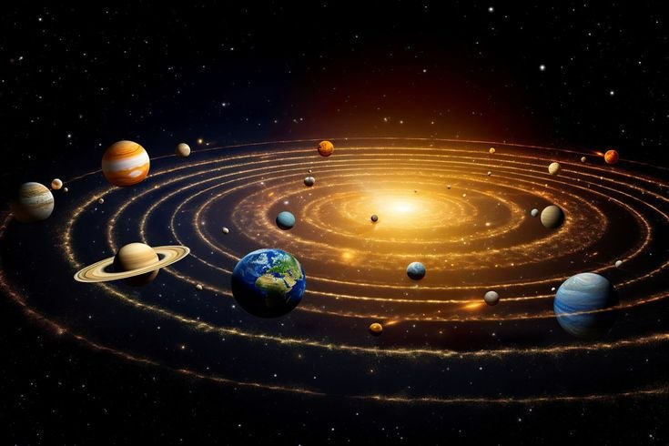
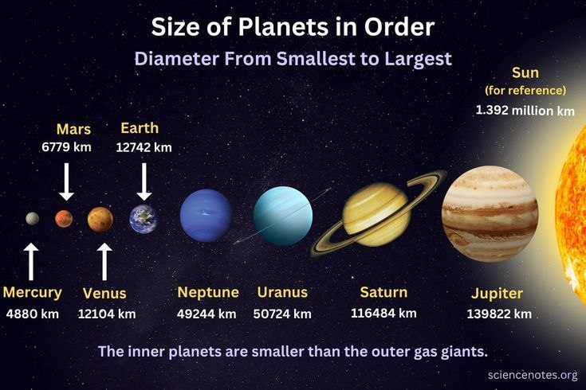
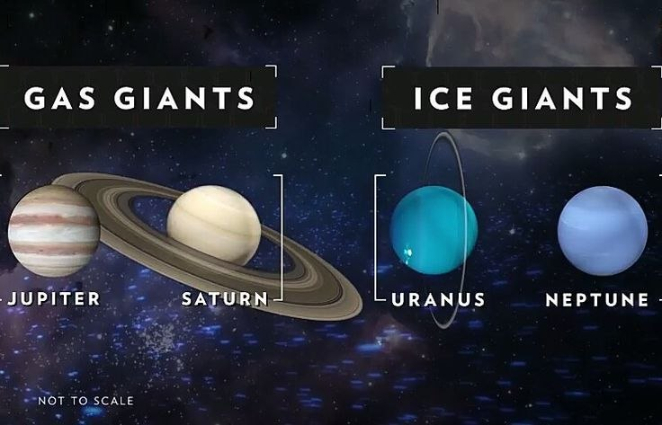
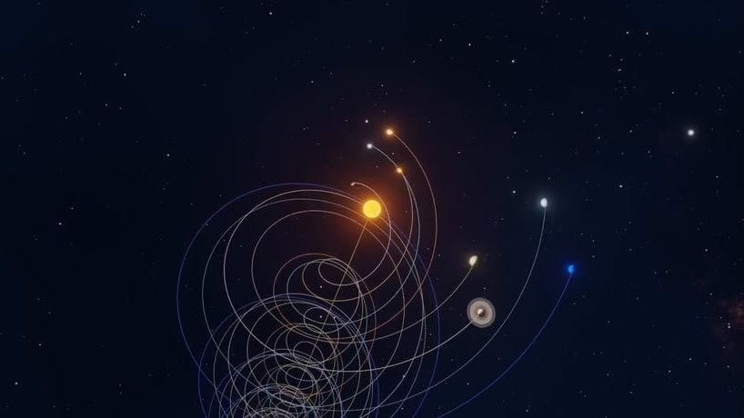
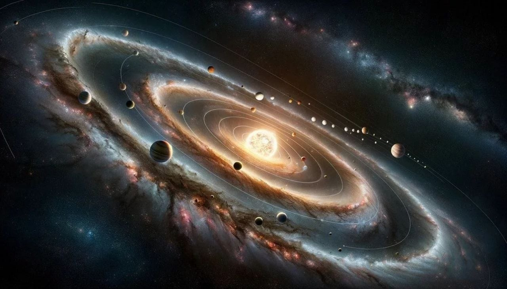

Earth
Earth is the only known world that supports life.
Earth is the only known world that supports life.
At the heart of our celestial neighborhood lies the Sun, a colossal, glowing ball of hot plasma that accounts for more than 99% of the total mass of the entire Solar System. Its immense gravitational pull acts as an anchor, holding everything from massive planets to tiny specks of dust in steady, predictable orbits. Closest to the Sun are the four terrestrial planets: Mercury, Venus, Earth, and Mars. These worlds are characterized by their solid, rocky surfaces and relatively compact sizes. Mercury is a cratered, airless world of extreme temperatures, while Venus is shrouded in a thick, toxic atmosphere that traps heat through a runaway greenhouse effect. Earth stands out as a vibrant, ocean-covered oasis teeming with life, and Mars, the Red Planet, is a cold, desert world that holds fascinating evidence of liquid water in its ancient past.


Beyond the rocky terrain of Mars and past the cluttered Asteroid Belt lie the true titans of our Solar System: the Jovian planets. Jupiter and Saturn are the gas giants, composed predominantly of hydrogen and helium. Jupiter is famous for its colossal size and its Great Red Spot—a raging storm wider than Earth itself—while Saturn is instantly recognizable by its spectacular, sprawling system of icy rings. Further out into the freezing depths of space are Uranus and Neptune, known as the ice giants. These planets possess thick atmospheres rich in water, ammonia, and methane, which gives them their distinct, beautiful blue hues. This outer realm is bounded by the Kuiper Belt, a vast ring of icy bodies and dwarf planets like Pluto, which eventually gives way to the Oort Cloud, a theoretical, giant spherical shell marking the absolute edge of the Sun's gravitational influence.


The Solar System is far more than just a collection of planets; it is a dynamic, interconnected machine bustling with smaller celestial bodies. Hundreds of moons orbit these planets, each boasting unique and often volatile environments. For instance, Jupiter’s moon Io is packed with active volcanoes, while Saturn's Titan possesses liquid methane lakes and a thick atmosphere, and Europa hides a vast liquid ocean beneath its icy crust, making it a prime target in the search for extraterrestrial life. Simultaneously, countless asteroids and comets—leftover remnants from the Solar System's formation roughly 4.6 billion years ago—streak through space. Bound by the laws of gravity and orbital mechanics, these diverse objects constantly interact, creating a beautifully complex and ever-evolving cosmic dance that scientists are still working to fully understand today.
